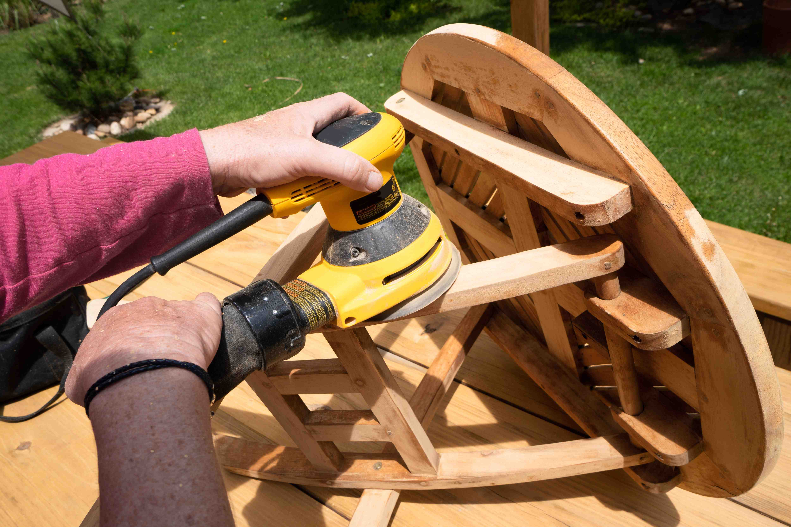
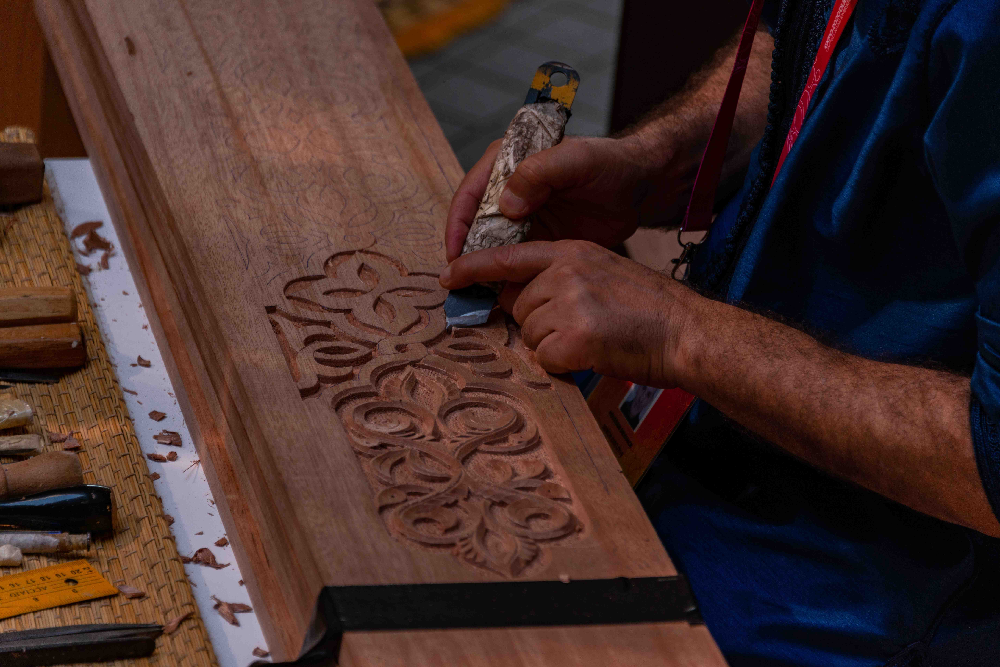
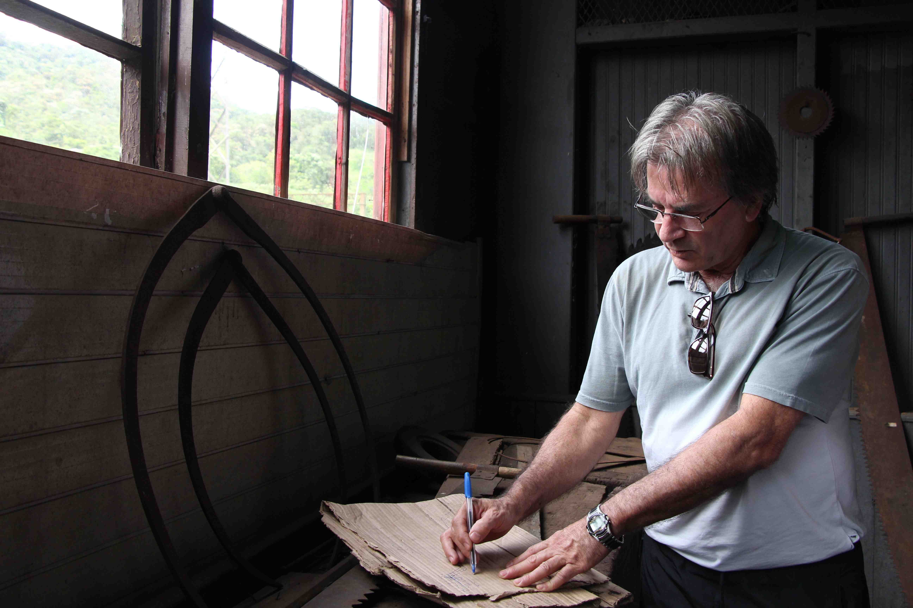
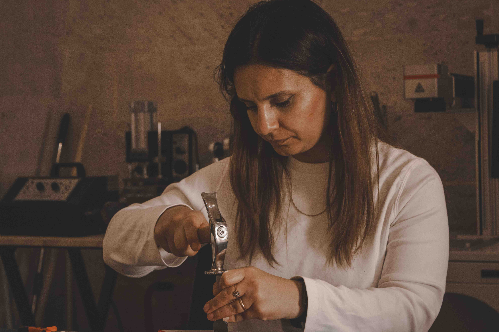
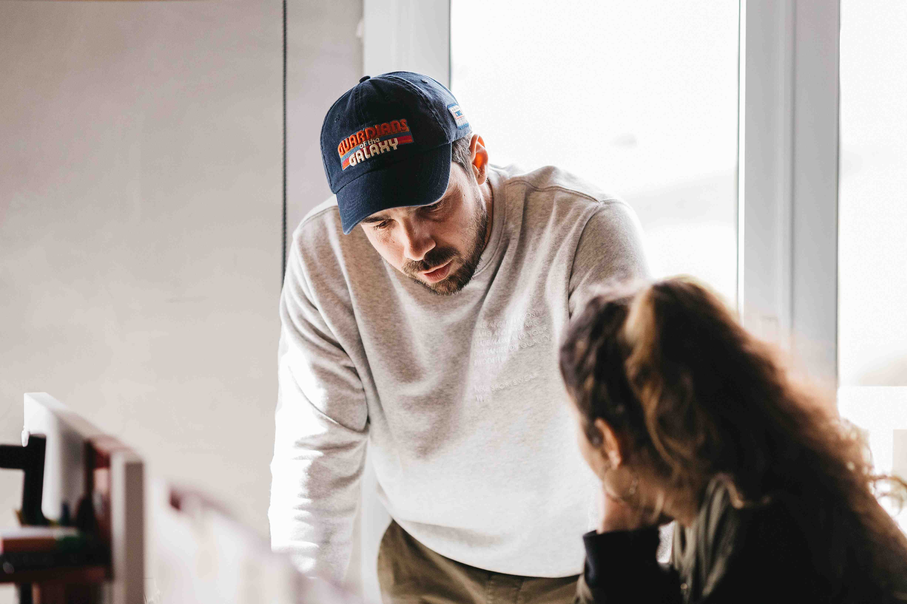

The material
Grain, texture and construction deserve careful observation.
WALNUT & GRAIN
Thoughtful restoration begins with respect for the piece.

OUR STORY
Walnut & Grain brings a considered approach to furniture restoration and wood finishing, with assessment, preservation and clear communication at the centre of the work.
OUR PASSION
Grain, texture and construction deserve careful observation.
A familiar piece can have meaning beyond its condition.
Suitable repairs and care can support continued everyday use.
MISSION & VISION
TRADITIONAL CRAFTSMANSHIP
Traditional French polishing uses shellac applied by hand with a pad. Careful preparation and controlled layers help establish tone and sheen.
Traditional does not mean universal: varnish, lacquer and shellac are different systems. We assess what is appropriate rather than defaulting to one technique.

WORKING PHILOSOPHY
Retain sound original surfaces and explain when intervention is necessary.
Set realistic expectations for damage, colour matching and the proposed result.
Agree preparation, repairs, finish selection and aftercare before work begins.
OUR PROCESS
Examine the piece and the existing finish.
Discuss suitable treatment and scope.
Prepare, repair and finish as agreed.
Review the result and provide care.
MEET THE TEAM

LEAD RESTORER
Coordinates assessment and discusses repair options.

FINISH SPECIALIST
Focuses on preparation, tone and finish selection.

WORKSHOP COORDINATOR
Helps organize enquiries, handling and project communication.
MATERIALS & FINISHES
A finish used in French polishing, with specific care requirements.
A protective finishing category with properties that vary.
A considered process of trials, observation and agreed expectations.
RESIDENTIAL & COMMERCIAL
CUSTOMER PERSPECTIVES
“The explanation helped me understand which parts of the finish could be retained.”
“Having a clear scope made the proposed restoration easier to assess.”
“The care instructions were useful for knowing how to use the piece afterward.”
START A CONVERSATION
Tell us about the piece, its condition and the finish you have in mind.
Request an assessment ↗